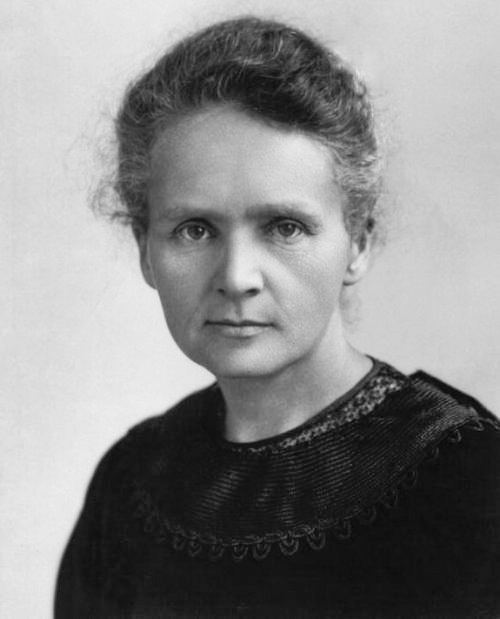

Los esposos Curie anuncian un cuerpo nuevo de actividad prodigiosa: el radio
En la sesión de hoy de la Academia de Ciencias se leyó la memoria en que Pierre y Marie Curie, con el químico Bémont, anuncian haber hallado en la pechblenda un elemento nuevo cuya radiación excede en centenares de veces a la del uranio, aun en muestras impuras. La señora Curie, polaca de nacimiento, es la primera mujer que firma hallazgo semejante.

En la sesión de este lunes de la Academia de Ciencias se dio lectura a una memoria que ocupará por años a los sabios de Europa: Pierre Curie, la señora Marie Sklodowska Curie y el químico Gustave Bémont anuncian haber hallado en la pechblenda, mineral de las minas de Bohemia, un cuerpo simple desconocido al que proponen llamar radio, por la intensidad con que irradia. Sus preparados, todavía impuros y mezclados con bario, muestran una actividad centenares de veces superior a la del uranio, y los autores sostienen que el elemento puro deberá superarla en proporciones que hoy suenan a fábula. El espectroscopio del señor Demarçay confirma en ellos una raya que no pertenece a ningún cuerpo conocido.
El hallazgo corona un año asombroso y un razonamiento de limpieza ejemplar. Hace dos años el señor Becquerel descubrió que las sales de uranio emiten sin cesar unos rayos invisibles que atraviesan cuerpos opacos e impresionan las placas fotográficas; nadie sabe de dónde sale esa energía que no se agota. La señora Curie tomó el enigma como asunto de su doctorado y lo sometió al número: midiendo con un electrómetro de precisión ideado por su esposo y su cuñado, halló que la pechblenda irradia bastante más de lo que su contenido de uranio autoriza. La conclusión era forzosa: el mineral esconde otra sustancia, mucho más activa, presente en cantidades ínfimas.
A esa caza se lanzó el matrimonio con paciencia de orfebres y herramientas de fundición: disolver, precipitar, cristalizar, medir; conservar la fracción que irradia y volver a empezar. En julio dieron con un primer elemento nuevo, que llamaron polonio en memoria de la patria de la señora, borrada de los mapas por tres imperios; hoy anuncian el segundo, mucho más potente. El trabajo se hace en un cobertizo de tablas de la Escuela de Física y Química, que gotea cuando llueve; y como el radio se esconde en proporciones ínfimas, harán falta toneladas de residuos de pechblenda, removidas a pala y a caldero, para arrancarle al mineral apenas un gramo del cuerpo puro.
La figura de la señora Curie ya intriga a París. Llegó de Varsovia hace siete años, con poco dinero y un apellido impronunciable, tras haber costeado con trabajos de institutriz los estudios de su hermana primero y los propios después; vivió en una buhardilla del Barrio Latino y salió primera de su promoción en la licenciatura de ciencias físicas. De su boda con el físico Pierre Curie, sabio ilustre por sus trabajos sobre los cristales y el magnetismo, cuentan que el viaje nupcial se hizo en bicicleta por los caminos de Francia, y que el laboratorio es desde entonces el hogar común. Ella misma ha acuñado la palabra con que se nombra el fenómeno: radiactividad.
Queda flotando sobre la sesión de hoy una pregunta que ningún académico formuló en voz alta: de dónde saca ese metal la energía que derrama sin descanso, contra toda ley conocida de la física. O hay un error en las medidas —y nadie lo ha hallado—, o la materia esconde en sus entrañas una fuente de fuerza que la ciencia ni sospechaba. Anótese además lo que la Academia, que no admite mujeres entre sus miembros, hubo de oír hoy sin poder evitarlo: que en la primera línea de este hallazgo firma una señora. Quede para los años venideros medir lo que duerme dentro del radio, y decir si esa lumbre nueva ha de curar, alumbrar o quemar; acaso las tres cosas.